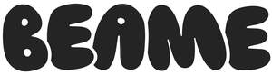

Trade Mark Journal No.2026/006 6 February 2026
UK00004329384 25 January 2026 (3)

- Class 3
- Sun protection preparations; Sun care preparations; Sun screen preparations; Sunscreen preparations; Sun-tanning preparations; Sun block preparations; Suntanning preparations; Skin care preparations; Skincare preparations; Non-medicated skin care preparations; SPF sun block sprays; Sunblock; Sun tan lotion; Sunscreen; Sunscreen lotions; Skin moisturizer; Sunscreen cream; Waterproof sunscreen; Moisturiser; Sunscreen creams; Sun-block lotions; Suntan lotion [cosmetics]; Sun bronzers; Water-resistant sunscreen; Skin lotion; Suncare lotions; Sunscreens; Moisturizers; Skin moisturiser; Skin moisturizer masks; Anti-aging moisturizers; After-sun lotions; Sun tan gel; Skin moisturizers; Suntan lotions; Cosmetic patches containing sunscreen and sun block for use on the skin; Anti-ageing moisturiser; Mattifying gel cream; Skin moisturisers; Moisturisers; Sun tan oil; Moisturizing creams; Sun blocking lipsticks [cosmetics]; Anti-aging moisturizers used as cosmetics; After-sun creams; Skin moisturizers used as cosmetics; Aftershave moisturising cream; After sun moisturisers; Suntan creams; Suntan creams [self-tanning creams]; Skin cleansing lotion; Sun creams; Sunscreen creams [for cosmetic use]; Cosmetics for protecting the skin from sunburn; Moisturising skin lotions [cosmetic]; Facial lotion; Sun protecting creams [cosmetics]; Sunscreen [for cosmetic use]; Moisturizing body lotions; Skin lotions; Lotions for the skin; Suncare lotions [for cosmetic use]; Moisturising body lotion [cosmetic]; Moisturising creams; Day lotion; Sun care lotions; Sun tan milk; After-sun lotions [for cosmetic use]; Moisturisers [cosmetics]; Cosmetic suntan lotions; Facial concealer; Facial moisturizers; Skin hydrators; Creams for tanning the skin; Age retardant lotion; Moisturising skin creams [cosmetic]; Moisturising creams, lotions and gels; Patches containing sun screen and sun block for use on the skin; Body mask lotion; Sun block [cosmetics]; Sun blocking oils [cosmetics]; Sun-tanning creams and lotions; Moisture body lotion; After-sun oils [cosmetics]; Exfoliant creams; Sun-tanning lotions; Anti-aging cream; Shaving lotion; Skin emollients; Anti-ageing serum; Hair moisturizers; Oils for moisturising the skin after sunbathing; Skin toner; Skin cream; Sun creams [for cosmetic use]; After-shave lotions; Aftershave lotions; Suntan oils [cosmetics]; Cosmetic sun milk lotions; Creams for firming the skin; Anti-aging creams; After-sun milks [cosmetics]; Sunscreens [for cosmetic use]; Body lotion; Sun care lotions [for cosmetic use]; Hair protection creams; Blemish balm creams; Bath lotion; Creams for the skin; Skin creams; Concealers; After-sun milk [cosmetics]; Sunscreen sticks; Aftershave balm; Skin toners; Cosmetics containing panthenol; Anti-perspirant deodorants; Pre-shave creams; Baby lotion; Baby suncreams; Cosmetic foams containing sunscreens; Milky lotions for skin care; Tanning creams; Moisturizing preparations for the skin; Skin lighteners; Skin cleansing cream; Cosmetic moisturisers; Non-medicated skin lotions; Anti-ageing creams; After sun creams; Skin foundation; Anti-wrinkle cream; After-sun milks; Sun-tanning creams; Exfoliating creams; Non medicated skin toners; Body moisturisers; Anti-wrinkle creams; Cosmetic sunscreen preparations; Cosmetics for suntanning; Hair protection lotions; Suntanning oil [cosmetics]; Hair lotion; Cosmetic sun oils; Sun-tanning gels; Tanning gels [cosmetics]; Tanning oils [cosmetics]; Depilatory lotions; Sun barriers [cosmetics]; Self tanning lotions [cosmetic]; Cosmetic creams and lotions; Scented body lotions and creams; After-sun milk for cosmetic use; Sun-tanning preparations [cosmetics]; Skin fresheners [cosmetics]; Skincare cosmetics; Sun blocking preparations [cosmetics]; Body mist; Face and body masks; Make-up for the face; Make-up for the face and body; Make-up preparations for the face and body; Hair spray; Scented body spray; Hair sprays; Glitter in spray form for use as a cosmetics; Skin care cosmetics; Skin care oils [cosmetic]; Skin care preparations; Cosmetics for the treatment of dry skin; Essences for skin care; Skin care creams, other than for medical use; Skin care lotions [cosmetic]; Cosmetic preparations for skin care; Skin care (Cosmetic preparations for -); Cosmetic products in the form of aerosols for skin care; Perfumed oils for skin care; Essential oils for the care of the skin; Skin relief serum [cosmetic]; Skin make-up; Skin care oils [non-medicated]; Oils for the skin; Colour cosmetics for the skin; Non-medicated skin care preparations; Cosmetic products in the form of aerosols for skincare; Lavender water; Breath freshing sprays; Incense spray; Breath freshening sprays; Sprays (Breath freshening -); Scented linen sprays; Scented water; Perfumed water; Scented linen water; Perfume water; Breath freshening liquid; Air fragrance reed diffusers; Conditioners in the form of sprays for the scalp; Degreasing sprays; Floral water; Room perfumes in spray form; Scented fabric refresher spray; Scented fabric refresher sprays; Anti-perspirants in the form of sprays; Makeup setting sprays; Skin cleaning and freshening sprays; Scented room sprays; Body oil spray; Body spray; Room perfume sprays; Cleaning sprays; Shaving sprays; Foot deodorant spray; Hair styling spray; Body sprays; Feminine deodorant sprays; Styling sprays for the hair.
Beame Beauty Ltd